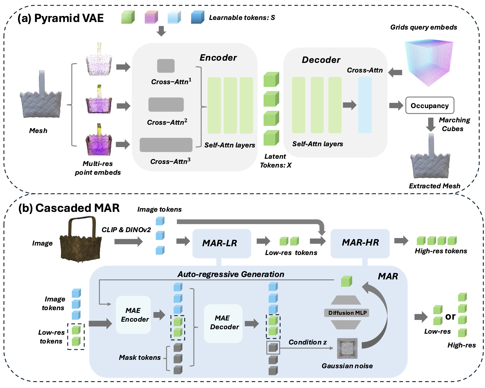

MAR-3D: Progressive Masked Auto-regressor for High-Resolution 3D Generation
Abstract
Recent advances in auto-regressive transformers have revolutionized generative modeling across domains, from language processing to visual generation, demonstrating remarkable capabilities. However, applying these advances to 3D generation presents three key challenges: the unordered nature of 3D data conflicts with sequential prediction paradigms, conventional vector quantization approaches incur substantial compression loss when applied to 3D meshes, and the lack of efficient scaling strategies for higher resolution. To address these limitations, we introduce MAR-3D, which integrates a pyramid variational autoencoder with a cascaded masked auto-regressive transformer (Cascaded MAR) for progressive latent token denoising. Our architecture employs random masking during training and auto-regressive denoising in random order during inference, naturally accommodating the unordered property of 3D latent tokens. Additionally, we propose a cascaded training strategy with condition augmentation that enables efficient up-scaling the latent token resolution. Extensive experiments demonstrate that MAR-3D not only achieves superior performance and generalization capabilities compared to existing methods but also exhibits enhanced scaling properties over joint distribution modeling approaches like diffusion transformers in 3D generation.
Method
Overview of MAR-3D: (a) Pyramid VAE: It processes learnable tokens through separate cross-attention layers, taking multiresolution point clouds and normals as input to generate occupancy fields. (b) Cascaded MAR: Condition on image features extracted by CLIP and DINOv2, we employ a cascaded design: a MAR-LR model for generating low-resolution tokens, and a MAR-HR model for high-resolution token. The MAR architecture details are illustrated in the blue box. While MAR-LR and MAR-HR share the same architecture, they differ in the inputs: MAR-HR additionally requires low-resolution tokens as input (shown in the dashed box).
Results